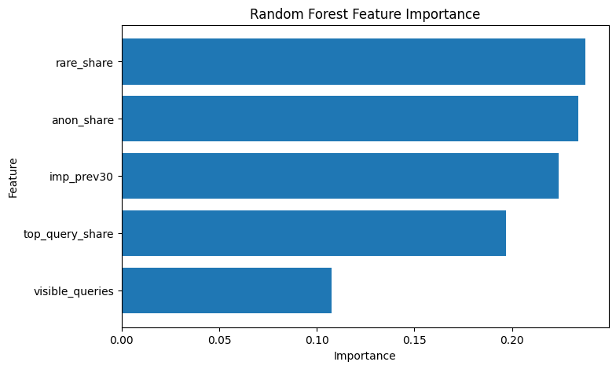
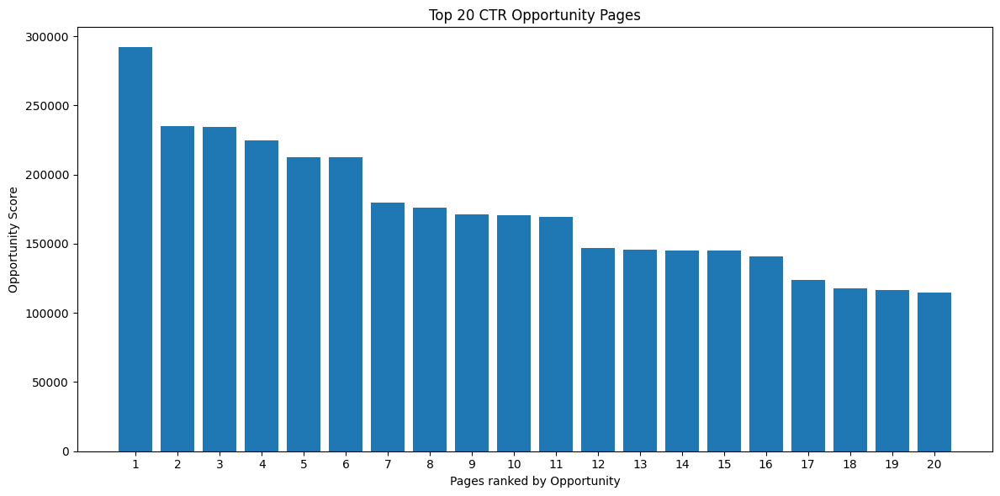

Search Intelligence Capstone · CTR / Engagement Opportunity Scoring
This project investigates how search-performance data can be used to identify pages that may represent CTR optimization opportunities. Historical visibility and query-composition features were engineered from the FlyRank Search Intelligence Warehouse and used to train a Random Forest classifier for identifying pages experiencing a decline of more than 20% in impressions. The model was evaluated against a majority-class baseline using a held-out test set, while a separate CTR Opportunity Score ranked pages with high search visibility and relatively low click-through rates. The analysis found that query composition and historical impression volume were important predictive signals, while the opportunity-scoring framework identified high-visibility pages that could be prioritized for SEO review. The resulting workflow provides a repeatable decision-support framework for prioritizing CTR optimization opportunities without claiming causal effects on search performance.
Search visibility does not necessarily translate into clicks. A page can receive substantial impressions while capturing relatively few clicks from search users. Identifying these pages can help SEO teams prioritize pages for further investigation and optimization.
This study focuses on the CTR / Engagement Opportunity Scoring lane. The objective is to develop a repeatable workflow that identifies pages with high search visibility and relatively low CTR, then ranks those pages so that optimization resources can be focused on the most promising opportunities.
The analysis also examines whether historical search-performance and query-composition signals can help identify pages experiencing significant changes in visibility.
This study uses the FlyRank Search Intelligence Warehouse release accessed through DuckDB. The analysis uses anonymized search-performance data and aggregates observations at the content level before applying machine learning and opportunity scoring.
| Table | Purpose |
|---|---|
| fact_content_daily_performance | Historical content-level search-performance metrics. |
| fact_content_query_90d | Query-level signals describing the distribution and composition of search visibility. |
The analysis uses anonymized data. Client names, domains, URLs, private queries, credentials, and other identifying information are not exposed in the public analysis.
Content-level features were aggregated using DuckDB rather than loading the complete warehouse into memory. Historical impression data were used to construct visibility features, while query-level data were used to capture query diversity and concentration.
The model uses features including historical impressions, visible query count, rare-query share, anonymized-query share, and top-query share.
The classification label identifies pages whose impressions declined by more than 20% between the previous and current observation windows:
Declining page: current impressions < 80% of previous impressions
A Random Forest classifier was selected as the primary machine learning model because it can capture non-linear relationships between search features and performance changes while also providing feature-importance measures.
The Random Forest was evaluated against a simple majority-class baseline using a held-out test set.
The model features were constructed from historical observations, while the target label represents the subsequent performance window. This separation helps reduce the risk of information from the prediction period being included in the model inputs.
This capstone uses two complementary analyses. First, the Random Forest classifier evaluates whether historical search-performance and query-composition features can identify pages experiencing a decline of more than 20% in impressions. Second, a separate CTR Opportunity Score ranks pages with high search visibility and relatively low click-through rates.
The predictive model evaluates historical search signals, while the Opportunity Score provides the practical ranking used to generate CTR optimization recommendations.
Majority-class baseline
63.3%
Random Forest accuracy
65.7%
The Random Forest improved on the baseline by 2.4 percentage points.
The Random Forest achieved 65.7% accuracy compared with 63.3% for the majority-class baseline on the same held-out test set. The improvement is modest, indicating that the model contains useful predictive information but should not be treated as a highly accurate production classifier.


The feature importance analysis indicates that query composition and historical impression volume were among the strongest contributors to the model's predictions. Rare-query share and anonymized-query share were particularly influential, followed by historical impression volume and query concentration.
To prioritize pages for CTR optimization, an Opportunity Score was calculated using:
Opportunity Score = Impressions × (1 − CTR)
Pages with high impression volume and relatively low CTR receive higher scores. These pages represent potential optimization opportunities because even a small improvement in CTR could potentially result in additional clicks from existing search visibility.

The highest-ranked pages should be considered for further SEO review. Potential actions include title optimization, meta-description improvements, structured-data review, search-intent analysis, and content refinement.
This analysis is observational and does not establish causal relationships between search-performance signals and CTR or impression changes.
The Random Forest provides only a modest improvement over the majority-class baseline. Its predictions should therefore be treated as decision-support information rather than definitive predictions of future search performance.
The CTR Opportunity Score is a prioritization heuristic rather than a prediction of guaranteed traffic gains. A high score indicates high visibility relative to CTR, but optimizing a page does not guarantee that its CTR or traffic will increase.
The dataset is anonymized and the public analysis does not expose client-identifying information, private queries, domains, URLs, or credentials.
| Priority | Action | Reason |
|---|---|---|
| 1 | Review high-impression, low-CTR pages | These pages have substantial existing search visibility but comparatively weak click capture. |
| 2 | Review page titles | Improve relevance and clarity of the search-result presentation. |
| 3 | Improve meta descriptions | Strengthen the value proposition presented to search users. |
| 4 | Review search intent alignment | Determine whether the content satisfies the intent represented by its search visibility. |
| 5 | Monitor performance | Track CTR and impressions after any optimization work. |
The complete analysis workflow is contained in the capstone notebook. The notebook includes the DuckDB data extraction, feature engineering, model training, evaluation, CTR opportunity scoring, and ranked recommendations.
The source notebook and supporting files are available in the project's GitHub repository.
Built on the FlyRank ML Internship dataset.
The author acknowledges FlyRank for providing the anonymized search intelligence dataset used in this analysis.